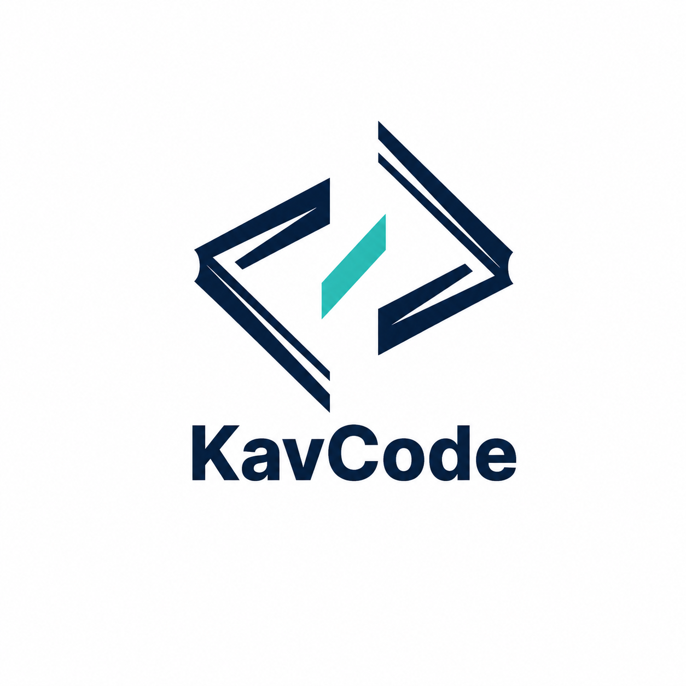
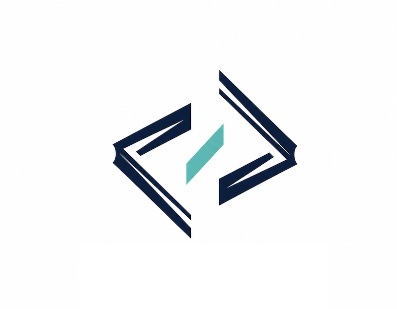
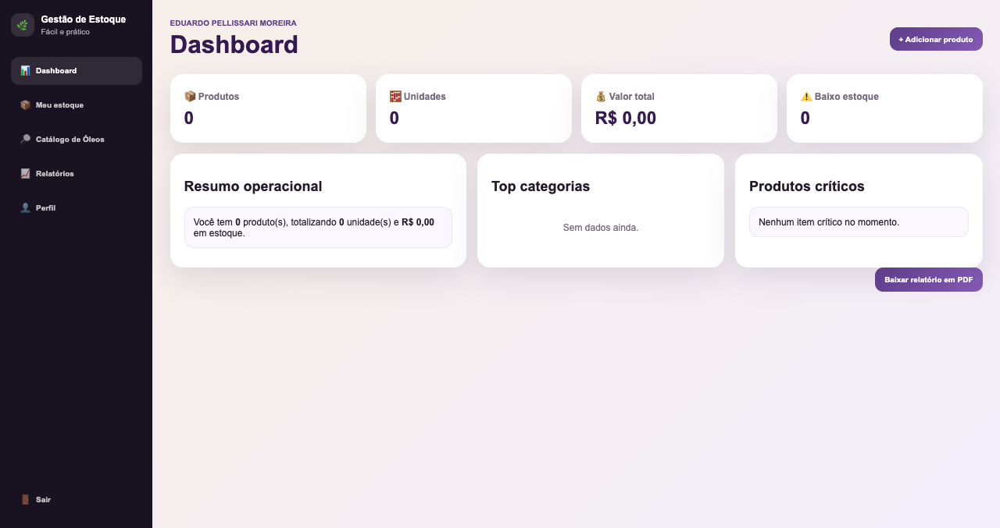

Site institucional
Home, páginas comerciais, apresentação da empresa, diferenciais e contato em uma experiência clara.

KavCode Iniciar projetoDesenvolvimento web • Sites • Sistemas

Sites institucionais e soluções digitais sob medida para negócios que precisam parecer profissionais, vender melhor e operar com mais eficiência.
O que a KavCode entrega
Cada página é pensada para comunicar valor, carregar rápido e facilitar o próximo passo do cliente.
Home, páginas comerciais, apresentação da empresa, diferenciais e contato em uma experiência clara.
Vitrine de projetos com filtros, estudos de caso e estrutura para mostrar resultados com autoridade.
Ferramentas internas, painéis administrativos, áreas restritas e recursos feitos para a rotina do negócio.
Ajustes, melhorias contínuas, novas páginas e suporte para manter o projeto pronto para crescer.
Portfólio

Sistema de pedidos

Sistema web
Como funciona
Entendimento do negócio, público, objetivos e materiais da marca.
Definição das páginas, conteúdos, jornada de contato e prioridades.
Criação da interface responsiva com componentes reaproveitáveis.
Testes finais, ajustes finos, configuração e entrega pronta para uso.
Vamos construir
Conte o que você quer vender, apresentar ou organizar. A KavCode transforma a ideia em uma presença digital objetiva e bem acabada.